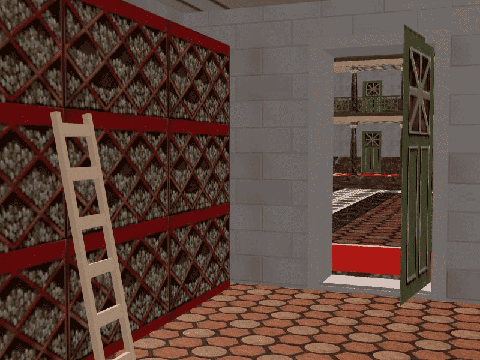

Введение в романо-германскую филологию
| лекция 1 | лекция 7 | лекция 8 |
| лекция 2 |  |
лекция 9 |
| лекция 3 | лекция 10 | |
| лекция 4 | лекция 11 | |
| лекция 5 | лекция 12 | |
| лекция 6 | лекция 13 |
ЛЕКЦИЯ 7:
LOGOS et cetera
Спокон веков задачей философии было объяснение мира. И лишь сравнительно недавно— лет 150 назад—резвый и рьяный еврей из Германии – Карл Маркс – возвестил, что мир надо не объяснять, а изменять.
Может оно и так, да только не мешает прежде разобраться что именно собрался ты изменять. Иными словами – без объяснения невозможно изменение.
Как вам уже известно, философское объяснение мира шло по трём направлениям:
- Бог,
- Природа,
- Человек.
Все известные мне философии сходятся в том, что Бог есть начало природы и человека.
Философия стоиков полагает, что это организующее начало пребывает в мире, определяя его законы и (извините заумное слово) структуру—на языке квиритов оно означает «строение».
Началу этому стоики дали название LOGOS
—слово/закон/разум.
И LOGOS этот живет, как уже было сказано, в мире, который и определяет, то есть, устанавливает пределы/границы между ночью и днём, добром и злом, человеком и животным.
Говоря, что «логос» по-гречески обозначает «слово», учтите – «слово» это берётся не в узком понимании, как символ/знак какой-то вещи, нет; у него в данном случае более широкий смысл, как, например «Слово о полку Игореве». То есть, слово как язык/речь.
Ну, а что такое человек?
Человек – это животное обладающее речью («логосом»). Не мудрено, что философы/мудрецы всех времен и народов проявляли и проявляют живейший интерес к языку/логосу, стараясь, очевидно, таким путем разобраться с LOGOSом с большой буквы.
Проявлять интерес к чему-то – значит пытаться понять как оно устроено.
Как ребенок пытается понять устройство игрушки?
Разбирает на составные части. Научным языком, такая разборка именуется анализом.
Ребенок не ломает, он(а) – анализирует, а сумеет ли потом собрать обратно как было, то есть, синтезировать, это уже другой вопрос.
Первые успешные шаги в анализе языка совершил один из софистов – Протагор (480 - 410 до Р. Х.).
Именно он додумался разделить язык/речь на предложения и он же дал первую классификацию видов предложения, то есть разделил предложения на 4 класса:
- вопросы;
- ответы;
- молитвы;
- повеления.
Продик, наставник Сократа, учил, что каким бы близким ни было значение разных слов, не найти и двух из них, значения которых совпадали бы полностью и совершенно
Потому-то столь важно поточнее определять значения и чётко различать синонимы, особенно в области моральных терминов.
Сократ успешно продолжил это направление по уточнительству, допытываясь у собеседников в чём разница между " храбрым" и " смелым", "тупым" и " глупым", " добрым" и "добреньким".
(Мы помним до чего его довело это вдавание в языковые тонкости.)
Ученик Сократа—Платон—произвел разграничение между предложениями утвердительными и отрицательными.
Слова же он разделил на 2 класса – глаголы и имена (относя к именам и существительные, и прилагательные).
Он отметил также, что полное предложение—логос—не может состоять из одного только глагола, или одного только имени, но что для него («логоса») необходимо наличие обоих.
Всё это показывает, что анализ языка доколупался до такого момента, когда аналитики/исследователи, наряду с сопоставлением самих предложений как цельных единиц, начали углубляться в рассмотрение внутренних структур и составных частей предложения.
Попутно, раз уж речь зашла о Платоне, считаю, будет небесполезным разобраться с этим основоположником идеализма и составить для себя ясное понимание что же такое идеализм.
Начнём с реализма.
Res по древно-романски означает «вещь». Вещь – это то, что могут ощутить/почувствовать органы человека.
Реальный («вещевой») мир – это мир составленый из вещей, котрые можно увидеть, услышать, потрогать, понюхать, лизнуть.
Однако, люди давно заподозрили, что помимо реального мира существует ещё некий мир, который людям почувствовать нечем.
Простейшим доказательством существования невидимых-неслышимых-неощутимых сил является магнит, под влияние которого так охотно подпадают мелкие железки.
Так что же там – в том не-вещевом мире, по ту сторону границы из магнитных полей?
Реалист скажет: раз он за пределами моих ощущений, значит, его и вовсе нет, а в том, чего нет, ничего и быть не может.
Ну, а кто верит в существование запредельного мира, тот населяет его всякими догадками.
Сократ, если помните, запредельными вопросами занимался мало, ему интересней было разобраться в людях; и в своих дотошных выспрашиваниях вопросы он старался сделать наивозможно более наглядными:
- Вот ты говоришь «мой сосед – хороший человек». Но чтобы отличить хорошее от плохого, непременно надо иметь образец, с которым и сравниваешь.
В гончарной мастерской, например, мастер ставит перед учеником образец—eidos—и говорит: «лепи такой же!». Удалось слепить похожий – хорошо, нет – плохо.
Так какой такой образец—eidos—имеешь ты в уме, говоря «хороший человек»?
Платон, ученик Сократа, верил в существование не-реального мира и населил его eidos/идеями-образцами.
В том мире, говорил Платон, есть, например, идея/образец лошади, а все лошади здешнего—реального—мира это попытки вещей/материи стать похожей на ту идею.
Есть там также идея любви, а все любови реального мира есть уподоблением, в меру сил и возможностей, тому образцу...
Реальный мир, говорил Платон, это пещера, по стенам которой мелькают неясные тени, а истиный сияющий мир, мир идей, он вне этой пещеры; туда надо выйти, чтобы понять и полюбоваться.
На такую поэтичную притчу матерый материалист возразит, что,
во-1-х, вряд ли кто захочет вернуться со светлого дня в темную пещеру,
во-2-х, после яркого света, он в пещере и теней-то не увидит (то есть окажется слепым),
а
в-3-х, обитатели пещеры его повяжут и сунут в закуток, чтоб он сослепу не наступал бы на их любимые мозоли..
Но, как бы там ни было, eidos Сократа, подмеченный им в гончарной мастерской, превратился в идеальный мир Платона.
И с той поры того, кто верит/доказывает существование мира за пределами реального, называют идеалистом, пусть даже тот мир он населяет чем-то иным,
отличным от идей Платона.
Платон, в отличие от Сократа, был из аристократии и был богат.
Он купил рощу в окрестностях полиса Афины и устроил там школу, названную по давнему имени рощи – Академией.
В числе учеников Академии был и Аристотель, приехавший в полис Афины из полиса Страгир. Он обучался у Ксенократа (сам Платон был тогда в отъезде на острове Сицилия) логике.
Логика, как вы можете догадаться, слово производное от слова «логос» и обозначает оно инструмент для деланья философии.
Аристотель, который тоже, в свою очередь, стал учителем в Академии, а затем открыл собственную школу в при-афинской роще под названием Лицей (..?..), исключительно важное значение приписывал языку/логосу и правилам ведения спора – диалектике.
Для него логика не была равнозначной остальным наукам—физике, математике, метафизике—но шла прежде них.
Лишь овладев логикой можно переходить к изучению остальных.

Аристотель написал огромные энциклопедические труды, охватывающие все ветви современного ему знания. В них он свёл воедино фрагментарные/обрывочные догадки-заметки своих предшественников о языке.
Заглавным из его трудов является ORGANON, что в переводе значит «инструмент/орудие» (так сказать, ВИВИСЕКТОР) состоящий из 6 книг в 14 томах.
В ОРГАНОНЕ берут истоки такие понятия как «подлежащее», «сказуемое»; категории места, времени, количества, качества и прочего разного (всего 10 штук).
По сути, Аристотель изобрел новый технический язык – философские диспуты были переведены на здоровые алгебраические рельсы; заниматься философией теперь мог не всякий, кому лень, а лишь тот, кто осилит эту премудрость – язык философии.
Философская школа в полисе Мегара, основанная также одним из сократиков по имени Эвклид, пошла ещё дальше и в своем анализе доколупалась до таких частей предложения как союзы и расклассифицировала их на:
-
разделительные -
«или я – или кошка» -
и соединительные -
«на диване и вокруг него».
Они же исследовали слово «поскольку» (иначе говоря «потому что»), а также предложения условного вида «Если смогу – помогу.»
Однако, философская работа мысли происходила не только в полисах Афины и Мегара.
В полисе Александрия Египетская, построенном по велению Александра Макендонского на побережьи Северной Африки, и который—после скоропостижной кончины Александра—при делёжке между соучастниками походов покойного достался (вместе со всем Египтом) Птоломею, где тот и последущие цари династии Птоломеидов создали и подкармливали научный центр посвященный музам – Мусейон.
Спонсированный Птоломеидами центр всерьёз и долго конкурировал с афинским, мегарским, пергамским и прочими научными центрами.
Пережил их, пережил династию царей Птоломеидов (последней в их роду была некая Клеопатра), пережил Римскую империю; собрал богатейшую коллекцию античных рукописей—Александрийскую библиотеку—
и был разрушен и сожжён уже в 4-м веке текущей эры последователями очередной—молодой и рьяной—религии: христианами, как дьявольский соблазн и оплот язычества.
Так вот, именно между стоиками и сотрудниками Мусейона—александритами—завязался тот спор относительно языка, который продолжается и поныне; правда, с применением уже современной терминологии (нового технического языка) и способов доказательства.
И о чём же можно спорить больше 2 тысяч лет?
Конечно же, о языке/речи, то есть о LOGOSе.
Например, откуда он взялся?
Ответ александритов прост – люди взяли и договорились: давайте эту вот вещь называть так, а вон ту – эдак.
Вот так, по согласию, да по подобию новых слов с уже согласованными и пошёл-поехал складываться новый язык.
Короче: всё – по уму.
На греческом «по уму» будет – ano logos, поэтому всех сторонников такого взгляда на язык стали именовать аналогистами/analogists.
Александриты-мусейонцы были первыми аналогистами.
А стоики?
Эти упрямцы помнили, что LOGOS он не только язык, но и божественное начало, а если согласиться с аналогистами, что язык – творение людей, то и сам LOGOS получается их творением. А кто же тогда сотворил людей?
При таком раскладе система стоиков о сотворении/определении мира (и людей в нём) со стороны божественного ЛОГОСа идет псу под хвост. На что они, стоики, никак не согласны и выдвинули свой вариант – язык не изобретение людей, но отражение законов установленных в природе.
Не потому, что люди уговорились называть майку «майкой» называется она так, а потому, что в данном слове отражена суть этой вещи—именно оно соответсвует истиной природе её.
Что есть отличительным признаком продукта сил природы от изделий человека?
У человека поделки ровненькие, аккуратненькие, а у природы – всё тяп-ляп:
там – бугор, тут – ямка. Короче – сплошь аномалии.
Вот стоики и принялись выискивать аномалии в языке, как доказательство тому, что он есть отражением воплощённого в природе закона-ЛОГОСа, который надо ещё постичь и понять, что каждая ямка—или, там, бугор—не просто так,
а с умыслом, и нет в природе зряшных аномалий.
Аномалия это отход от общепринятого, обычного – это исключение.
Ну, а кто поищет в языке исключений, тот всегда найдёт.
Аномалисты как раз и заняты таким выискиванием, чтобы, постигнув смысл исключений, проникнуть в глубинные, не-поверхностные законы языка, природы и—чем чёрт не шутит?—самого Логоса.
Из всего вышенаверченного можно сделать нижеистекающий вывод, что именно у древних греков и алексакндритов начали выкристаллизовываться первые определения структуры языка, складываться первые граматические понятия.
ЗАДАНИЕ:
«Если не сведут с ума римляне и греки написавшие тома для библиотеки.»
2. Почему «стеклянный», «оловянный», «деревянный» пишутся с 2-мя «н», а остальные прилагательные указывающие на материал изделия с одним?